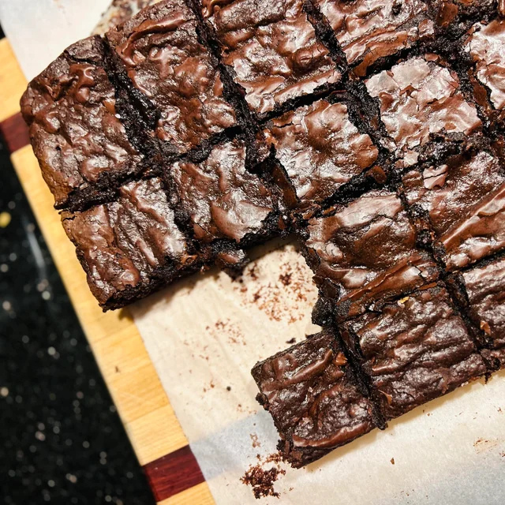

Brownie Recipe
Brownie

I first discovered this AMAZING brownie recipe after really craving brownies, and I tried the first recipe i found and instantly fell in love. This is that recipe with slight modifications.
Ingredients
Butter Chicken is a classic Indian dish made with marinated & grilled chicken (Tandoori chicken), simmered in a creamy tomato gravy/curry. The sauce is super silky, buttery, aromatic and mildly spicy. This lip-smacking and delicious dish is hugely popular among the Indian food lovers across the world.
- 227g Butter, to be browned
- 90g Cocoa Powder
- 113g Cooking Chocolate
- 300g White Sugar
- 100g Brown Sugar
- 1Tbsp Vanilla Essence
- 4 Eggs
- 120g Flour
- 1Tsp Salt
Instructions
- Preheat oven to 180°C. Line long rectangular pan with foil or parchment paper.
- Put cocoa powder and chopped chocolate in a heat-proof bowl.
- Make brown butter: Melt butter in a light-coloured saucepan over medium-low heat. Once foaming and spitting, stir and scrape bottom with a spatula every 10-15 seconds.
Grainy white milk solids will begin to appear on the bottom, Continue for 5-10 minutes(go by senses, not time).
When foam clears and spitting noises go silent, watch closely: the milk solids will toast in seconds.
As soon as the solids thurn brown and smell nutty, remove pan from heat so it doesn't burn.
- Immediately pour hot brown butter into prepared bowl to cool.
- With a stand mixer, whip suagrs, vanilla and eggs on medium-high until thick, smooth, fluffy and lightened in colour. For moist, rich brownies, stop 4-5 minutes. For slightly more height and fluff, whip for 8-10 minutes until very thick and pale.
- Reduce speed to low. Slowly pour chocolate-butter mixture into egg foam mixture until incorporated.
- Using a spatula, fold in flour and salt until just incorporated. Fold in additional chocolate if using. Batter will be very thick.
- Scoop and spread batter evenly into prepared pan.
- Bake 25 minutes until surface is glossy and just set(not jiggly in centre). Do not overbake. They will finish cooking as they cool.
- Let cool at least 30 minutes before removing from pan to slice